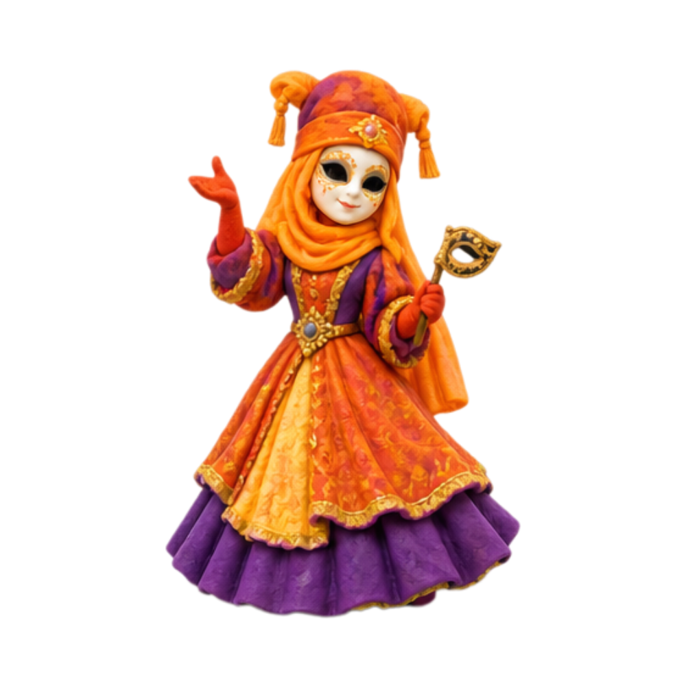
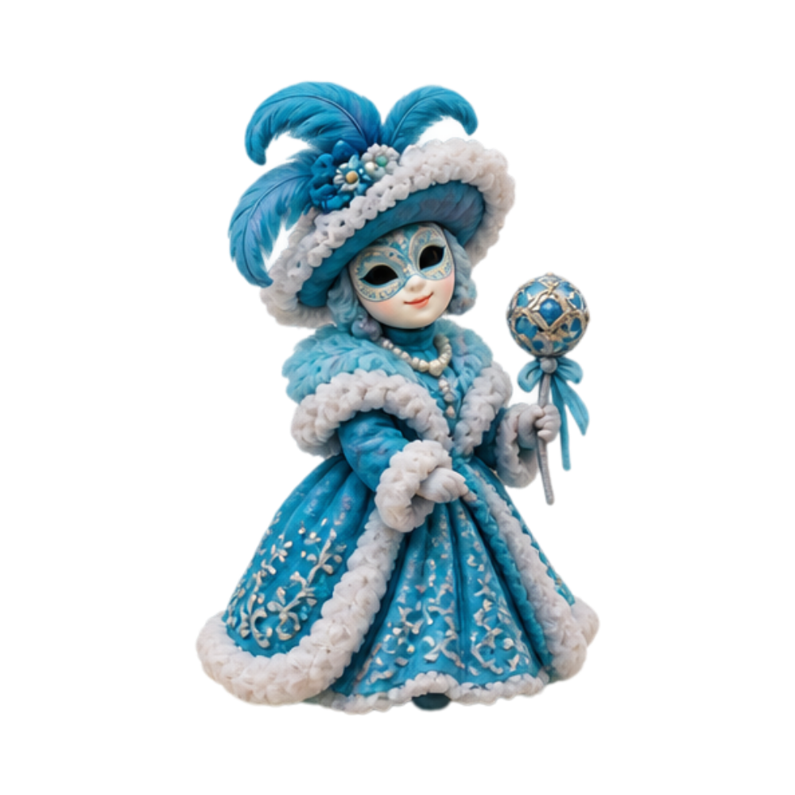
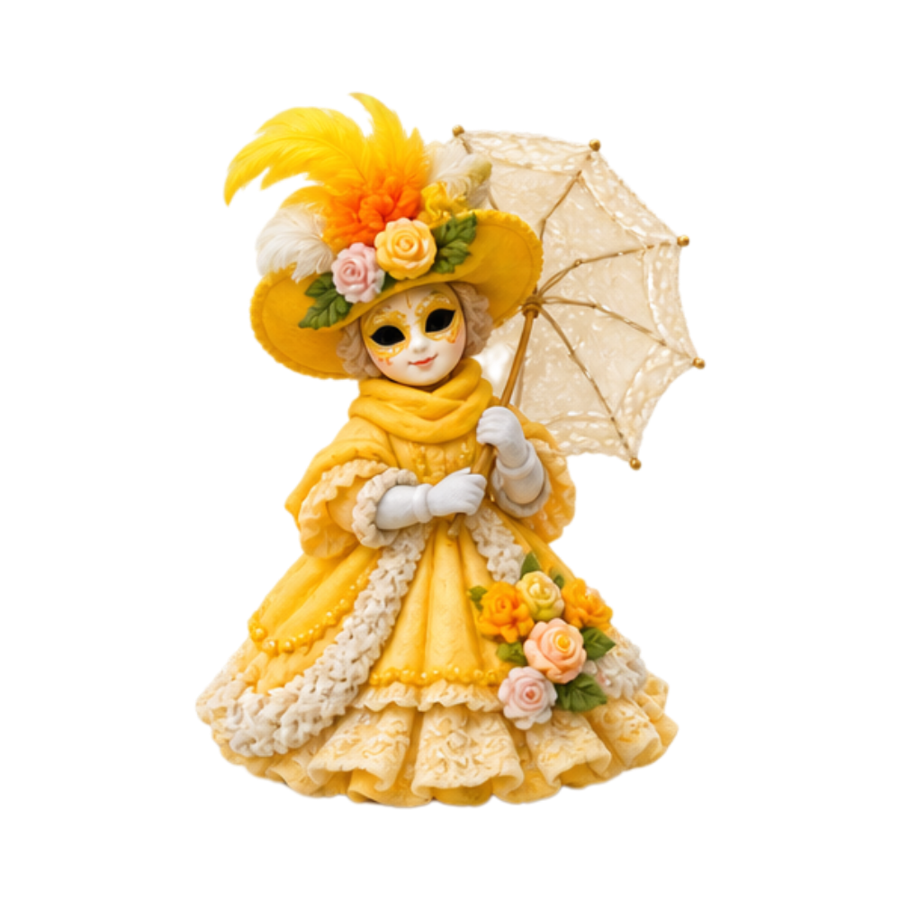
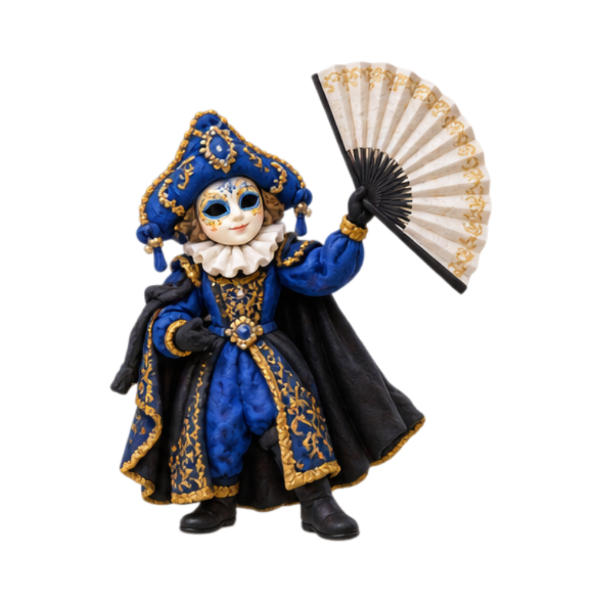
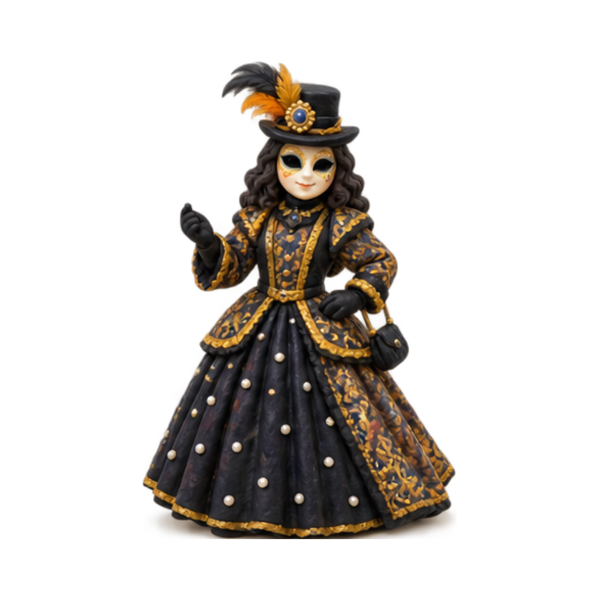
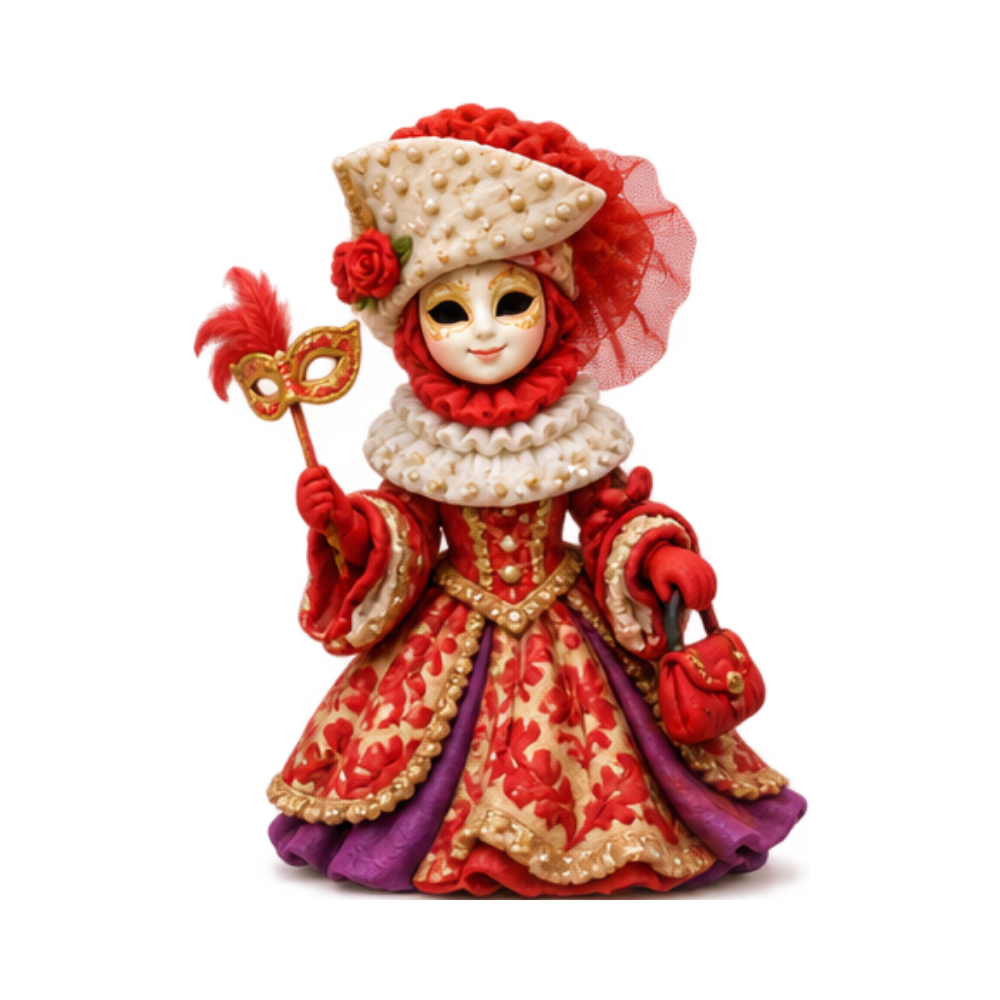
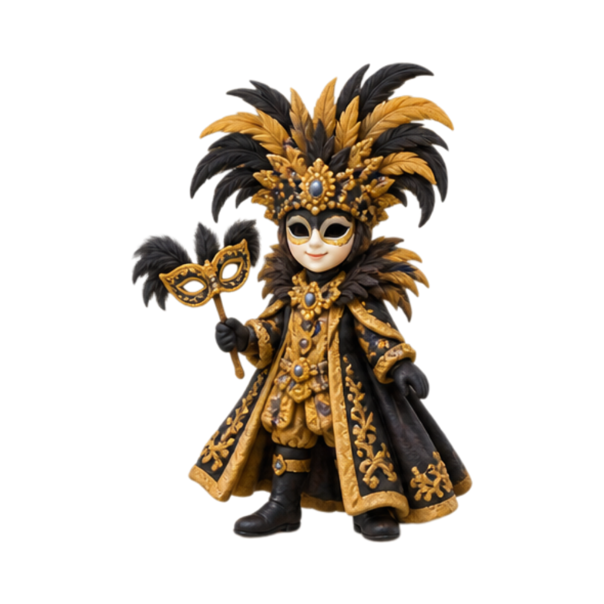

Le persone indossano costumi e maschere, scherzano,
giocano, ballano e fanno festa.
Il Carnevale non ha una data fissa:
cambia ogni anno perché dipende dalla data di Pasqua.


🏛️
Le origini
Origins
Carnevale has very ancient roots. Its origins are connected to the
Saturnalia of Ancient Rome and the
Dionysian festivals of Ancient Greece.
During these celebrations, people enjoyed games, jokes, costumes,
and festivities before returning to everyday life.
🎭
Le maschere
Masks
Masks and costumes helped people hide their identities and pretend
to be someone different.
During some Carnevale traditions, disguises temporarily reduced
ordinary social differences and allowed people to joke, play,
and step outside everyday rules.
📅
Quando si festeggia?
When is it celebrated?
Il Carnevale non ha una data fissa. Cambia ogni anno perché dipende
dalla data di Pasqua.
Il periodo culmina con il Giovedì Grasso e il
Martedì Grasso, prima della Quaresima.
💡
Lo sapevi?
Did you know?
Un antico detto latino associato al Carnevale dice:
Semel in anno licet insanire.
“Una volta all’anno è lecito impazzire!”
“Once a year, it is allowed to go a little crazy!”
👀
Osserva i costumi
Look at the costumes
I costumi di Carnevale possono essere elaborati,
colorati e pieni di dettagli.
Carnevale costumes can be elaborate, colorful,
and full of detail.





Nota:
Le immagini sono interpretazioni artistiche ispirate
ai costumi di Carnevale e non rappresentano specifici
personaggi tradizionali.
Note:
The images are artistic interpretations inspired by
Carnevale costumes and do not represent specific
traditional characters.
Fonte · Source
Informazioni adattate da
Focus Junior,
“Carnevale: le origini della festa più matta dell’anno,”
Redazione Focus Junior, 5 febbraio 2026.